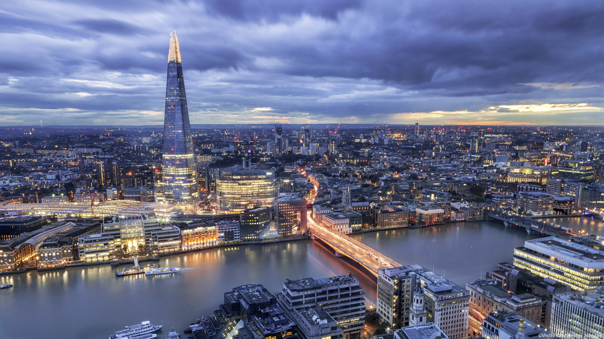
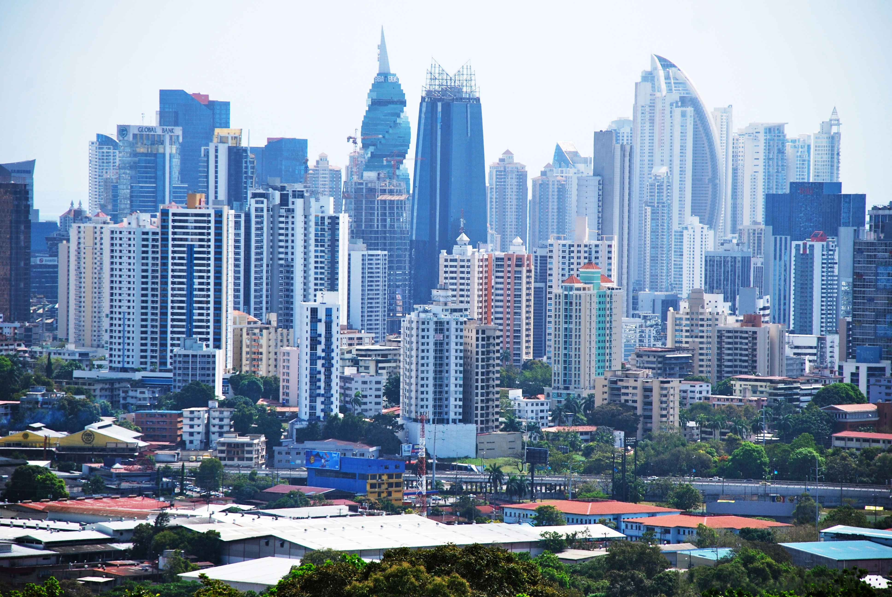
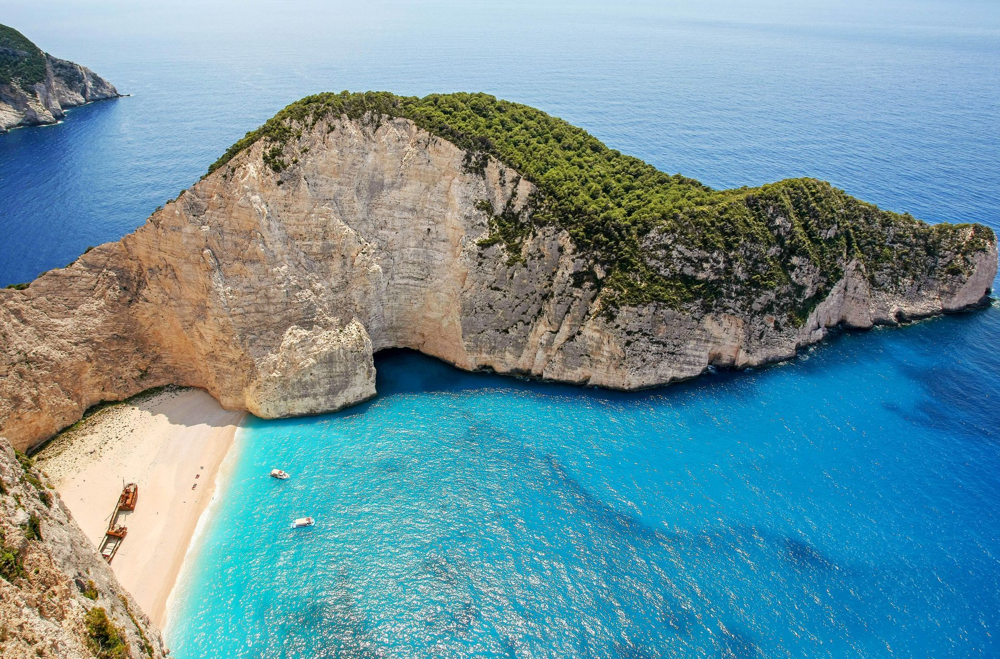

Lontoo on yksi ihanimmista kaupungeista, sillä sieltä löytyy kaikkea mielenkiintoista ja vanhaa arkkitehtuuria. Yksi lempinähtävyyksistäni on ehdottomasti Big Ben, koska sen upeat yksityiskohdat ja ulkonäkö saa jokaisen ohikulkijan katseet kääntymään. Suosittelen Lontoosssa kulkemaan julkisilla, kuten metrolla tai Double Decker busseilla, sillä ne kulkevat kätevästi ja nopeasti ympäri kaupunkia.
Panama Citystä löytyy ison kaupungin tunnelmaa, siksi osa paikallisista kutsuukin sitä Panaman Miamiksi. Keskustasta voit löytää hulppeita pilvenpiirtäjiä, luksushotelleja ja suuria kauppakeskuksia. Jos et ole kuitenkaan pilvenpiirtäjien ystävä, voit suunnata vanhaan kaupunkiin, eli Casco Viejoon. Cascossa on miellyttävä tunnelma, sillä suurin osa paikallisista viettää aikaansa siellä. Cascosta löydät myös paljon suloisia pieniä paikallisia kauppoja ja ravintoloita.
Kreikasta löytyy upeita saaria, mutta niistä suosikkini on Zakynthos. Zakynthoksella voit esimerkiksi nähdä kilpikonnia Marathonisi-kilpikonnasaarella, käydä uimassa kristallinkirkkaassa merivedessä ja käydä päiväretkellä veneellä. Aina kun olen käynyt Kreikassa, olen käynyt veneretkillä, sillä niistä saa monipuolisen kuvan koko saaresta ja pääsee näkemään useita eri rantoja. Zakynthokselta löytyy myös ihania ravintoloita, joista suosikkini on Zantessa sijaitseva Green Frog.
